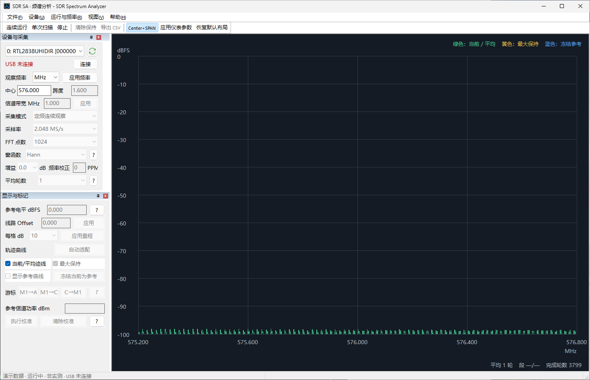
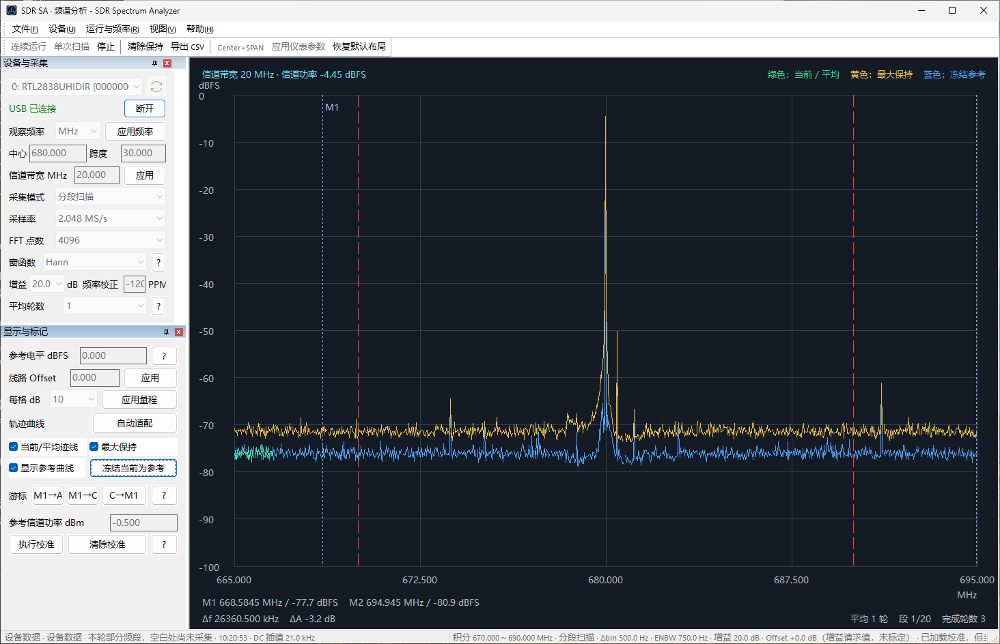
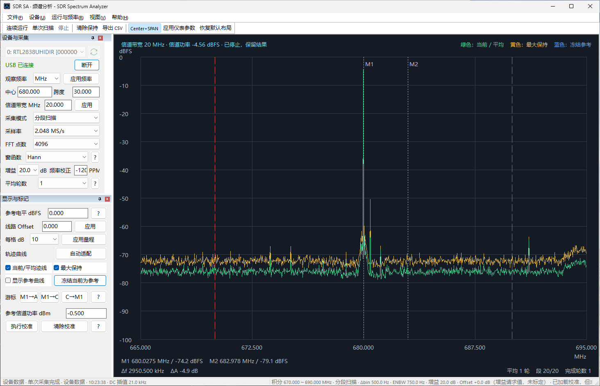

SDR Spectrum Analyzer 用户指南
产品： SDR Spectrum Analyzer 发布者： Mattino 507 Software 版本： 1.0 最后更新： 2026 年 9 月
1. 简介
SDR Spectrum Analyzer 是一款 Windows 桌面应用，用于通过经验证的兼容 USB 软件定义无线电（SDR）硬件查看和分析 RF 频谱数据。它提供频域轨迹、标记、信道分析、可配置采集设置、分段扫描和 CSV 导出。
它是一款频谱可视化与分析应用，不是通用无线电接收或音频解调应用。
2. 测量范围和重要限制
V1.0 通常以 dBFS 显示相对信号电平：即相对于 SDR 数字满量程的分贝。dBFS 不等同于 RF 输入功率 dBm。
显示数值取决于 SDR 调谐器和 ADC 响应、所选增益、频率、采样率、连接的电缆和衰减器以及 RF 环境。越接近 0 dBFS 的数值表示越强的信号，但过于接近 0 dBFS 可能导致 ADC 削波并使频谱失真。
应用包含针对匹配测量设置和参考仪器的信道功率校准流程。这种校准受其保存的设置条件约束，并非通用设备校准。请勿将 V1.0 视为已校准的实验室级频谱分析仪、精密功率计，或具有绝对 dBm 准确度保证的产品。
3. 免费版与完整版
SDR Spectrum Analyzer 是一款免费应用。免费版没有时间限制、没有试用期、也没有使用次数限制，不会到期，也不会停止工作。完整版是一次性升级，解锁其余的控件和测量功能。没有订阅。
免费版以固定的仪表配置从受支持硬件采集实时频谱。中心频率由您设置，其余采集和显示设置保持为下表中的数值。
| 设置项 | 免费版 | 完整版 |
|---|---|---|
| 中心频率 | 可调，24–1766 MHz | 可调，24–1766 MHz |
| 跨度 | 固定 1.600 MHz | 可调 |
| 信道带宽 | 固定 1.000 MHz | 可调 |
| 采集模式 | 定频连续 | 固定跨度或分段扫描 |
| 采样率 | 2.048 MS/s | 1.024、2.048 或 2.4 MS/s |
| FFT 点数 | 1024 | 1024 至 16384 |
| 窗函数 | Hann | Hann 或 Blackman-Harris |
| 增益 | 0 dB | 可调 |
| 频率校正（PPM） | 0 | -200 至 +200 |
| 平均轮数 | 1 | 1、4、8、16 或 32 |
| 参考电平 | 0 dBFS | 可调 |
| 每格 dB | 10 | 可调 |
| 线路 Offset | 0 dB | 可调 |
两个版本共有的功能：设备刷新、选择、连接与断开；在 24–1766 MHz 全范围内调节中心频率；当前/平均轨迹；观察频率单位选择；演示数据作为数据源；以及保存配置和加载配置。
以下功能需要完整版：
| 功能 | 免费版 | 完整版 |
|---|---|---|
| 标记 M1 和 M2 | — | 可用 |
| 差分标记读数 | — | 可用 |
| 信道功率 | — | 可用 |
| 分段（宽跨度）扫描 | — | 可用 |
| 信道功率校准 | — | 可用 |
| 最大保持 | — | 可用 |
| 冻结参考 | — | 可用 |
| 自动适配量程 | — | 可用 |
| 导出 CSV | — | 可用 |
在免费版中加载配置文件。由完整版写出的 .cfg 文件可以在免费版中加载。免费版不提供调节的设置会被恢复为上表中的免费版数值。这是正常行为，既不是错误，也不表示文件损坏；升级后再次加载同一文件即可恢复其中保存的数值。
演示数据是一种数据源，不是升级。选择演示数据只改变所显示数据的来源，不会解锁任何功能：选择演示数据时，上表中标记为完整版的功能仍然属于完整版。
升级。当 Microsoft Store 产品可用时，帮助 > 升级到完整版...会打开完整版升级流程。参见菜单和工具栏参考。
4. 系统和硬件要求
- 支持的 Windows 桌面环境。应用面向 Windows Desktop，最低版本为 Windows 10 2004。
- 已测试的 RTL2838 USB SDR 硬件（VID:PID
0BDA:2838）和 R820T 系列调谐器。 - 设备 Interface 0（
MI_00）上可用的 Microsoft WinUSB 绑定。
仅声明已测试的 RTL2838/R820T 系列路径。不声明兼容所有 RTL-SDR 设备、RTL2832U 设备、克隆设备或其他调谐器系列。
5. 安装
请使用为所选发布渠道提供的发行安装包安装 SDR Spectrum Analyzer。
应用安装与 SDR 硬件驱动准备是相互独立的。应用不会安装、下载、更新、替换或以其他方式修改驱动。兼容硬件必须先具备所需的 Windows 驱动配置，应用才能访问它。
生产 WinUSB 签名和分发架构仍受 Microsoft 指导约束。本指南特意不提供驱动下载、证书、测试模式、Zadig 或恢复流程。详细的驱动故障排查属于未来受支持的故障排查资料。
6. 快速入门
- 启动 SDR Spectrum Analyzer。
- 连接已测试的兼容 SDR 硬件，并确保其 Interface 0 已可供 WinUSB 使用。
- 在设备与采集中选择设备列表旁的刷新按钮，然后选择列出的设备。
- 选择连接。设备打开后，状态文字变为绿色并显示 USB 已连接，按钮变为断开。
- 设置中心频率。在完整版中，还可根据需要设置跨度、采集模式、采样率、FFT 点数、窗函数、增益、频率校正和平均轮数。
- 选择单次扫描完成一轮采集，或选择连续运行重复采集。
- 查看频谱、信道范围和状态信息。
- 需要结束正在运行的采集时，选择停止。
- 使用完毕后选择断开释放设备。
若要在没有硬件的情况下体验本应用，请选择运行与频率 > 数据源 > 演示数据（非实测），然后选择单次扫描或连续运行。这条路径不需要 USB 连接。演示数据是生成的，并非实测；选择演示数据时，完整版功能仍属完整版。
7. 主窗口概览

主窗口包含以下区域：
- 设备与采集：硬件选择和采集设置。
- 显示与标记：量程、轨迹、标记、线路 Offset 和信道功率控件。
- 频谱显示：轨迹、坐标轴、信道边界和标记读数。
- 输出与诊断：带时间戳的面向用户的状态和诊断消息。应用启动时该面板处于隐藏状态；可从视图 > 输出与诊断显示它。
- 状态栏：设备/采集状态及频谱或信道上下文。
- 菜单和工具栏：下文所述命令的快捷入口。
左侧设置面板可停靠；可用高度有限时可以滚动。恢复默认布局会恢复应用工具栏和停靠面板布局，并再次隐藏输出与诊断。
8. 设备与采集
设备控件
第一行是设备列表和一个紧凑的刷新按钮，第二行是连接状态以及改变该状态的唯一动作。
- 设备列表：列出已枚举的 SDR 设备。
- 刷新（设备列表旁的按钮）：枚举支持的设备并报告就绪状态。
- 连接状态：只读文字。未打开设备时显示红色的 USB 未连接，已打开时显示绿色的 USB 已连接。它是指示，不是按钮。
- 连接 / 断开：动作按钮。未连接时显示连接，用于打开所选的列表设备；设备打开后显示断开，用于关闭连接。采集运行期间断开依然可用，此时会先停止采集，再关闭设备。
这些命令在设备菜单中同样提供，菜单中的断开命令名为断开设备。该菜单另外提供检查连接，这是一项诊断操作，说明见故障排查；它不是正常连接流程中的必需步骤。
就绪消息会区分未发现设备、Interface 0 的 WinUSB 不可用、接口已就绪和后端访问失败。接口就绪仍是连接和采集成功的必要条件。
频率和采集控件
- 观察频率单位：用于频率输入的 Hz、kHz、MHz 或 GHz。
- 中心 / 跨度或起始 / 停止：两种频率输入模式。使用Center+SPAN切换。中心频率在两个版本中均可调节；跨度为完整版功能。
- 信道带宽 MHz（完整版）：信道积分宽度。应用后以当前显示中心作为信道中心。
- 采集模式（完整版）：固定跨度采集或分段扫描。
- 采样率（完整版）：1.024、2.048 或 2.4 MS/s。
- FFT 点数（完整版）：1024、2048、4096、8192 或 16384。
- 窗函数（完整版）：Hann 或 Blackman-Harris。
- 增益（完整版）：从应用列表中请求调谐器增益。设备会选择最接近的受支持调谐器档位。
- 频率校正 / PPM（完整版）：-200 至 +200 PPM 的整数频率校正。0 表示关闭校正。
- 平均轮数（完整版）：1、4、8、16 或 32 个完整扫描。
在免费版中，上述设置保持为免费版与完整版中列出的固定数值。
采集运行时，影响采集的设置、数据源变更以及加载/保存配置均不可用。请先停止采集，再应用变更。
9. 采集模式
固定跨度
固定跨度受所选采样率和 FFT 配置的可用瞬时带宽限制。应用会从可用拼接数据区域中排除边缘和受 DC 影响的频点。
分段扫描（完整版）
对于更宽的跨度，SDR Spectrum Analyzer 会依次调谐多个频率分段，并将其可用 FFT 频点拼接到显示范围中。它不会同时采集整个显示跨度。
每个分段在内部使用四个 FFT 帧，并在线性功率域中平均。平均轮数随后会对完整扫描之间的对应频点进行平均。更高的平均数可降低波动，但会增加稳定时间，并降低对变化信号的响应速度。
10. 运行测量
- 连续运行会启动重复的设备采集或重复的演示数据更新。
- 单次扫描会完成一轮采集后停止。
- 停止会请求停止当前采集或演示运行。最后一次已发布的结果仍会显示。
- 清除保持（完整版）会清除目前收集的最大保持数据。
只有在所选数据源就绪时，连续运行和单次扫描才可用：
| 数据源 | USB 状态 | 连续运行 / 单次扫描 |
|---|---|---|
| 设备数据 | 未连接 | 不可用 |
| 设备数据 | 已连接且空闲 | 可用 |
| 演示数据 | 无需连接 | 可用 |
采集已在运行时，这两个命令都不能用于开始新的采集；请先停止当前采集。连接、采集、停止和错误状态会写入状态栏和输出与诊断，输出与诊断无需可见即可接收这些消息。
11. 频谱显示和轨迹

图形默认以频率为横轴、dBFS 为纵轴。如果当前设备和设置存在匹配的已保存信道校准，符合条件的信道和轨迹读数可使用 dBm；否则仍为 dBFS。
- 当前/平均轨迹显示当前处理结果或所选扫描平均结果。
- 最大保持（完整版）保留每个频点观察到的最高数值，直到被清除。
- 显示参考轨迹（完整版）显示单独冻结的轨迹以供视觉比较。冻结当前为参考会捕获当前轨迹及其原始频率范围。
- 参考电平 dBFS（完整版）设置显示量程的顶部值，不会改变硬件增益或已采集样本。
- 每格 dB（完整版）选择垂直分度；应用量程应用输入的量程。
- 自动适配量程（完整版）会根据当前轨迹设置合适的量程。
- 线路 Offset（完整版）是非负的显示和校准路径补偿值。输入已知的路径损耗或衰减后应用。
免费版以 0 dBFS 参考电平、每格 10 dB、线路 Offset 为 0 的设置显示当前/平均轨迹。
稳定的生产 UI 颜色为：绿色表示当前/平均，黄色表示最大保持，蓝色表示冻结参考。
12. 标记和测量

本节所述的标记、差分读数、信道功率和校准流程均需要完整版。
图中有两个标记：M1 和 M2。
- 在有效的绘图点上单击左键放置 M1。
- Shift + 左键单击放置 M2。
- 水平拖动 M1 或 M2 虚线可移动该标记。
- M1→A 将 M1 移到最高的有效显示轨迹点。
- M1→C 将 M1 移到显示中心。
- C→M1 将显示中心更改为 M1。若采集正在运行，应用会停止采集，并在中心频率变更后恢复采集。
标记读数显示 M1 和 M2 的频率及电平。差分读数显示 M2 与 M1 之间的频率和电平差。
信道功率和积分范围
信道范围以当前显示中心为中心，并使用信道带宽 MHz。图中会绘制其范围边界。只有在完整、有效且覆盖该范围的扫描以及所选平均轮数完成后，信道结果才可用。
参考信道功率 dBm字段和校准按钮用于参考仪器校准流程。校准要求使用设备数据、实时连接的设备、有效完成的信道结果、无削波、匹配的当前采集设置、有效的线路 Offset，以及 -160 至 +30 dBm 的参考输入。清除校准会删除已保存的信道校准记录。
13. 频率和跨度控件
输入数值时请使用所选的频率单位。Center+SPAN会在两个输入字段中切换：
- 中心频率和跨度；以及
- 起始频率和停止频率。
有效显示范围为 24 MHz 至 1766 MHz。在免费版中，跨度固定为 1.600 MHz，只能在该范围内移动中心频率；在完整版中跨度可调，最小为 10 kHz。变更范围会清除活动设备快照；在演示数据模式下会生成新的演示视图。更宽的跨度使用采集模式中所述的分段采集。
将鼠标置于图形上方滚动滚轮可围绕指针缩放频率范围。用左键拖动空白绘图区可平移频率范围。硬件采集忙碌时，这些操作不可用。
14. 数据源
数据源子菜单提供：
- 设备数据：从已连接的受支持 SDR 获取的频谱数据。
- 演示数据（非实测）：生成的演示数据。
演示数据不访问 USB，不能用于 RF 测量或校准。它适用于学习用户界面和显示行为。
演示数据仅是一种可选的数据源，不是完整版试用，也不会解锁完整版功能；参见免费版与完整版。
15. 配置文件
文件 > 保存配置会将 .cfg 文本文件写入用户选择的位置。文件 > 加载配置会在采集停止后读取兼容的 .cfg 文件。
当前格式的版本标记为 SDR_SA_CONFIG=1，保存采集设置、显示量程、轨迹可见性、信道带宽、线路 Offset、数据源、频率输入模式/单位和可选参考信道功率。它是应用配置文件；请勿将其视为通用交换格式，也不要手动编辑，除非能够在应用中验证结果。
在免费版中加载文件时，免费版不提供调节的设置会被恢复为其免费版数值。参见免费版与完整版。
16. 导出数据
导出 CSV需要完整版。存在频谱轨迹时可使用该命令，应用会要求选择 .csv 保存位置。
CSV 包含数据源、dBFS 单位、存在设备快照时的采集设置、信道结果状态和线路 Offset 的注释元数据。表格列为：
frequency_hz,power_dbfs,valid
valid 标识包含可用绘图数据的频点。对于设备数据，仅当当前保存的校准与快照匹配时，文件还可能包含校准后的 channel_dbm 元数据字段。逐频点的主要数值仍为 dBFS。
17. 输出与诊断
输出与诊断面板记录带时间戳的消息，包括应用就绪、设备刷新、驱动就绪、连接、采集开始/停止、配置操作、导出以及面向用户的错误。
应用启动时该面板处于隐藏状态，以便频谱显示获得完整的窗口高度。选择视图 > 输出与诊断可显示它；面板可见时该菜单项处于勾选状态，再次选择即可隐藏。恢复默认布局也会将其隐藏。
无论面板是否可见，消息都会被记录，因此隐藏期间不会丢失任何内容。面板保留最近消息的有限历史；在当前实现中，超过 1000 行后最早的条目会被丢弃。
文件 > 保存诊断日志...会将已累积的消息写入您选择的文件。该面板无需可见，也不必先将其打开。报告问题时请使用该文件。
输出与诊断不是用于内部驱动安装、证书设置或工程恢复流程的受支持接口。
18. 状态栏
状态栏显示简要的设备和采集状态以及频谱上下文。根据当前数据，它可以包括数据源、单次/连续或已停止状态、信道积分范围、采集模式、FFT 频点间隔、ENBW、增益、线路 Offset、校准状态和扫描进度。
显示 uncalibrated 或 未标定 状态表示所请求或活动的增益没有匹配的已保存校准；它本身并不表示设备故障。
19. 菜单和工具栏参考
文件
设备
运行与频率
- 连续运行、单次扫描、停止、清除最大保持、Center+SPAN和导出 CSV：参见运行测量和频率和跨度控件。清除最大保持和导出 CSV需要完整版。
- 数据源：参见数据源。
- 恢复默认布局：恢复工具栏和停靠面板。
视图
帮助
- 使用说明会在浏览器中打开本离线用户指南，使用应用当前的界面语言。
- 升级到完整版...：当 Microsoft Store 产品可用时，打开完整版升级流程。该菜单项也会改为报告当前状态：正在查询 Microsoft Store 时显示正在检查完整版...，升级进行中显示正在购买完整版...，无法访问 Store 时显示重试 Microsoft Store...，完整版已生效后显示完整版。
- 支持：在浏览器中打开公开的产品支持网站。
- 隐私政策：在浏览器中打开已发布的隐私政策。
- 关于 About显示产品标识、版本、发布者、第三方声明提示和本地隐私声明。
Hann 和 Blackman-Harris 窗函数的说明可通过设备与采集中窗函数控件旁的 ? 按钮查看。
工具栏提供以下文本按钮：连续运行、单次扫描、停止、清除保持、导出 CSV、Center+SPAN、应用仪表参数和恢复默认布局。其中清除保持和导出 CSV 需要完整版。
20. 窗函数和 FFT 概念
FFT 将每个采集到的时域 I/Q 数据块转换为频率点。在给定采样率下，更多 FFT 点提供更细的频点间隔；采样率和所选跨度决定可用频率覆盖范围。
- Hann 的 ENBW 约为 1.50 个 FFT 频点，适合常规查看和一般信道功率工作。
- Blackman-Harris 的 ENBW 约为 2.00 个 FFT 频点，旁瓣低得多，在弱信号靠近强载波时可能更有帮助。
信道功率计算会应用 ENBW 校正。更改窗函数后，请重新采集并重新校准，然后再依赖已校准的信道结果。
21. 测量准确度和解释
除非应用明确显示匹配的已校准结果，否则请使用 dBFS 进行相对频谱解释。设备增益、PPM 校正和线路 Offset 的用途不同：
- 增益请求调谐器增益设置；后端使用最接近的受支持档位。它不是功率校准。
- 频率校正 (PPM)补偿系统性振荡器频率误差，不改变增益或功率。
- 线路 Offset用于显示和校准上下文中的已知 RF 路径损耗或衰减。
- 信道功率只有在有效完整扫描后才对配置的信道范围进行积分。没有匹配校准时仍为 dBFS。
- ENBW影响宽带功率解释，并已由信道计算考虑。
进行任何条件校准时，请使用已知参考、匹配设置、适当衰减和稳定的测量环境。更换设备、增益、频率相关条件、窗函数或相关测量设置后，应重新检查校准。
22. 故障排查
- 未列出设备：确认已连接测试硬件，然后选择刷新。
- WinUSB 驱动不可用：设备已存在，但 Interface 0 尚未能供 Mattino 后端使用。应用不会更改驱动。请仅在已发布的受批准生产支持路径可用时使用该路径。
- 无法连接：刷新设备列表，确认就绪状态，并确保没有其他应用占用设备。
- 需要核实可疑的连接状态：使用设备 > 检查连接。它会重新测试已打开的设备并报告结果，不会改变连接。这是一项诊断步骤，不属于正常连接流程。
- 连续运行和单次扫描不可用：选择设备数据时请先连接设备；选择演示数据时无需连接。采集已在运行时，这两个命令都不会开始新的采集。
- 采集无法开始：停止任何活动采集，从视图菜单显示输出与诊断并查看消息，并检查频率、跨度、信道带宽、FFT、采样率、增益和 PPM 输入是否有效。
- 轨迹或信道结果异常：检查削波、所选数据源、增益、线路 Offset、窗函数、平均、标记/信道范围，以及校准是否确实匹配当前设备和设置。
- USB 设备停止响应：尽可能在应用中先选择断开再选择连接，然后刷新。不要将工程证书或驱动操作作为最终用户解决方法。
23. 获取支持
SDR Spectrum Analyzer 的技术支持可通过公开产品支持网站获得：
https://wangyaoyang.github.io/mattino507-support/
该支持网站提供支持信息，并可访问公开的 GitHub 支持请求系统。
请求支持时，请提供应用版本、Windows 版本、设备就绪状态、已测试硬件标识、相关诊断消息，以及在有帮助时提供截图。文件 > 保存诊断日志...可将诊断消息收集为一个可随请求附上的文件。
请勿在公开支持请求中发布密码、凭据、产品密钥、私有证书、个人地址或其他敏感个人信息。
24. 隐私和许可
请参阅当前发行版单独发布的隐私政策和最终用户许可协议。
当前版本的隐私政策和最终用户许可协议可通过 SDR Spectrum Analyzer 产品支持网站获取。隐私政策发布于：
https://wangyaoyang.github.io/mattino507-support/sdr-spectrum-analyzer/privacy.html
帮助 > 隐私政策会打开同一页面。
请勿在本用户指南中重复隐私政策或 EULA 条款。
25. 第三方组件
商业发行版可能包含第三方开源组件或运行时组件。适用的声明和许可文本随产品在 THIRD_PARTY_NOTICES.txt 及其配套许可证文件中提供。商业 V1.0 包动态链接 libusb，并包含源自 Google Radio Receiver 的 Apache-2.0 归属说明；它不包含也不依赖 Legacy Osmocom rtl-sdr 运行时。